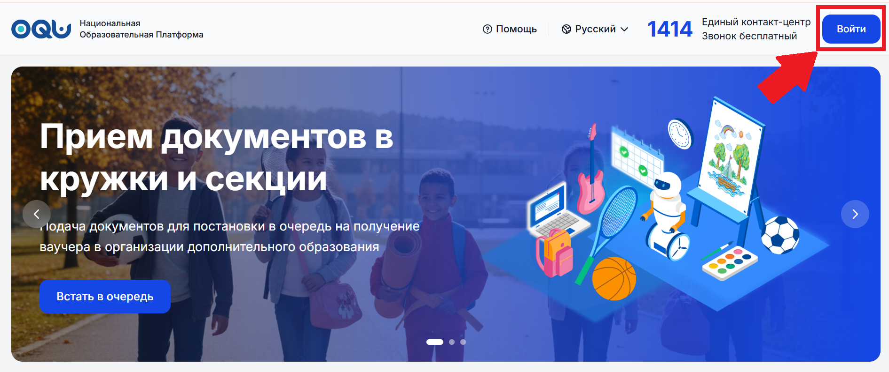
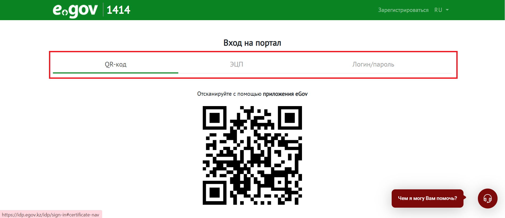
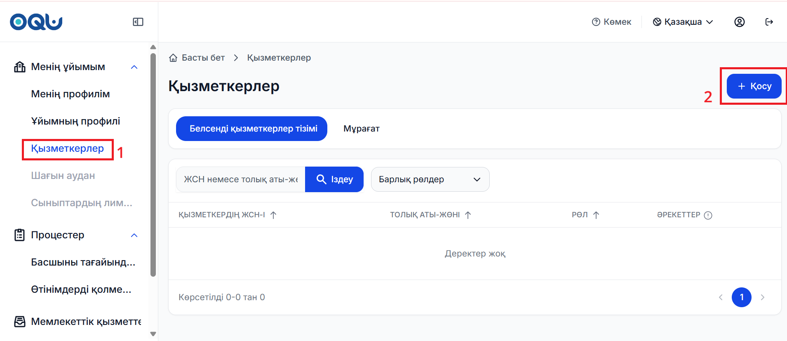
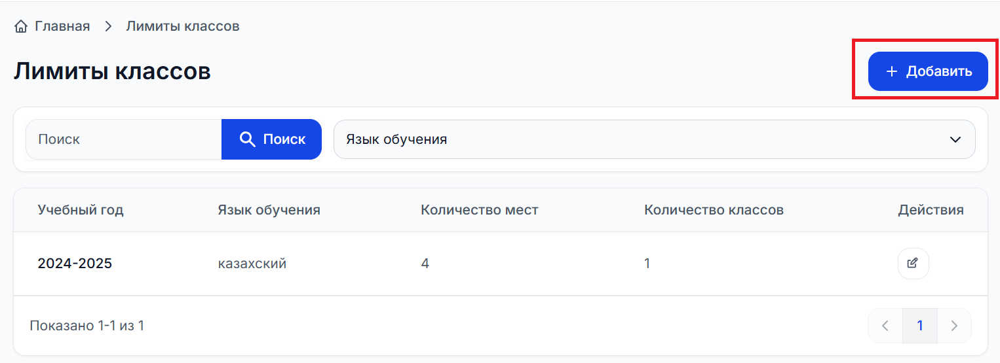
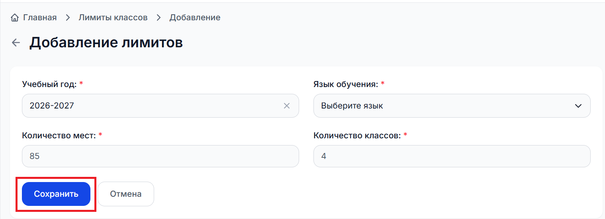
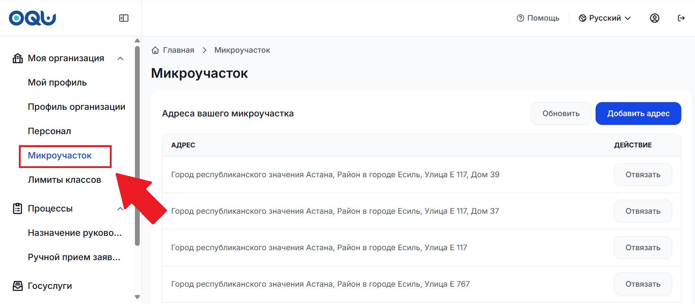
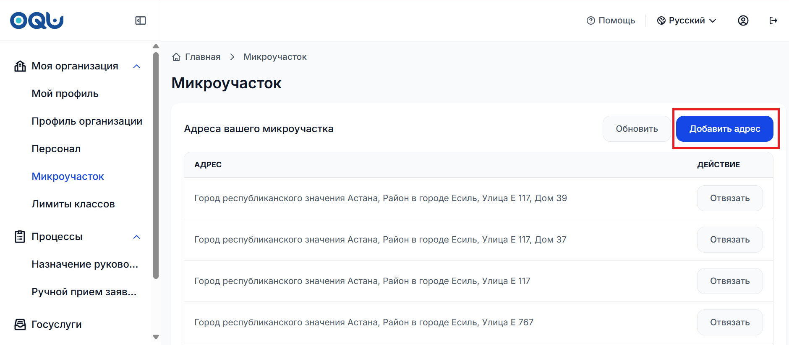
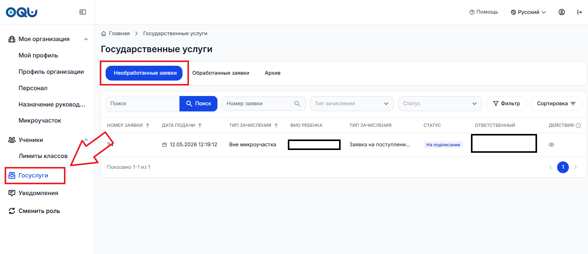
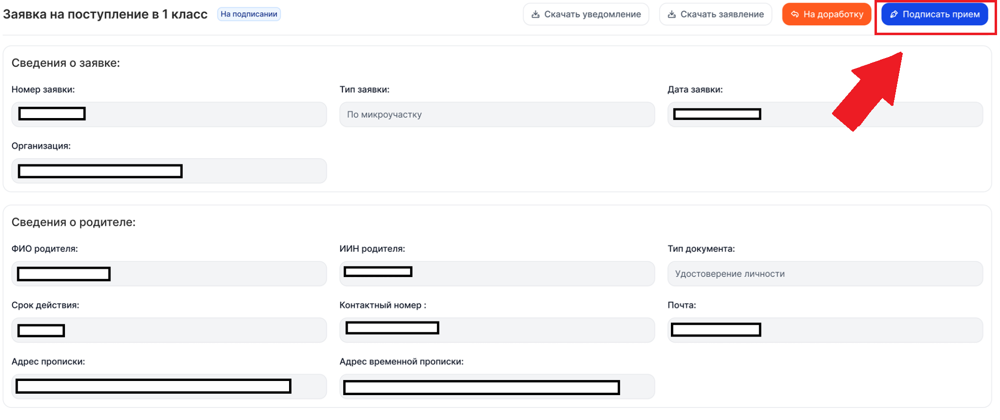

⚙️ Часть I. Подготовка к принятию заявок
Действия, указанные в данной части обязательны к выполнению - это необходимо для корректного принятия заявок. Выполняет их директор школы.
Перейдите на oqu.edu.kz и нажмите «Войти».

Авторизуйтесь через ЭЦП или eGov. Для подписания заявок обязательно ЭЦП юрлица.

В разделе «Персонал» нажмите «Добавить», введите ИИН и назначьте роль.

Лимиты классов (количество свободных мест) определяется отдельно для каждой параллели, учитывая класс, язык обучения и текущий учебный год.
Правила распределения мест:
Для тех, кто подает вне микроучастка, выделяется ровно четверть из общего количества мест.
Все остальные места отдаются тем, кто относится к школе по адресу прописки (по микроучастку).
Например, если в 1 классах всего 40 мест, 10 мест выделяется для тех, кто подал заявку вне микроучастка, 30 мест остается для тех, кто прикреплен к школе по микроучастку.
Проверить количество мест в разделе «Моя организация» → «Лимиты классов».

Нажмите «Сохранить» после внесения изменений.

Проверить адреса, закрепленные за организацией, можно в разделе «Моя организация» → «Микроучасток».

В этом разделе отображается микроучасток вашей школы. Чтобы добавить новый адрес, нажмите «Добавить адрес».

📋 Часть II. Как обрабатывать заявки?
Иполнитель проверяет документы в разделе «Необработанные заявки».

После проверки Исполнителем, решение утверждает Директор.
Данный функционал доступен только Директору и требует ЭЦП юрлица.
Нажмите «Подписать прием» через QR eGov Business или ЭЦП.

👨👩👦 Часть III. Подача заявки со стороны родителя
Процесс глазами родителя для общего понимания процесса сотрудником.